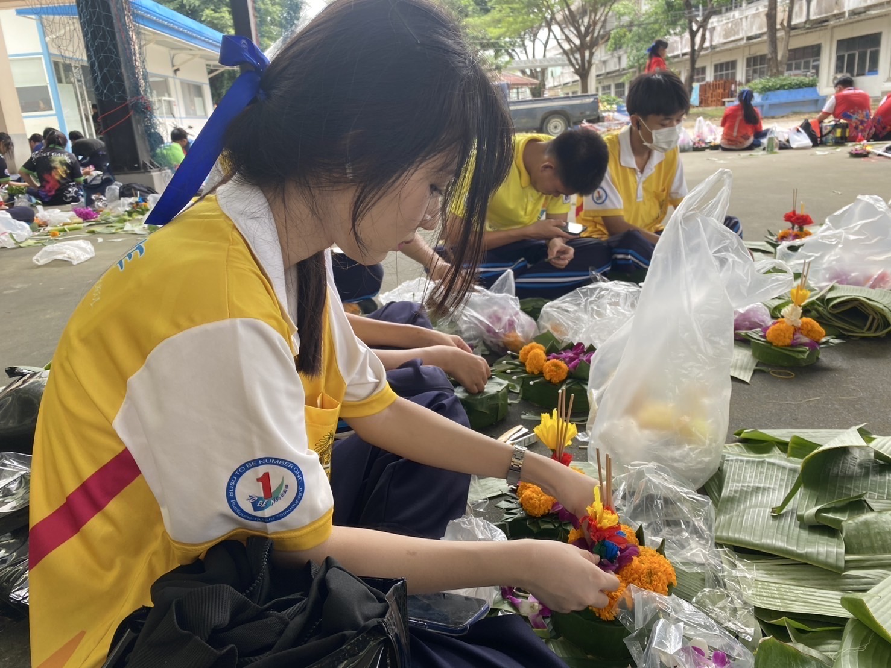

📂 คลังผลงานและความสำเร็จ
รวบรวมความตั้งใจและการเรียนรู้ตลอดช่วงมัธยมปลาย ณ โรงเรียนกระทุ่มแบน "วิเศษสมุทรคุณ"
🌐 ทักษะทางภาษาและการเรียนรู้ (Language & Literacy)


🎭 English Drama: การแสดงละครเวทีภาษาอังกฤษเรื่อง "Ariel" (Custom Version)
บทบาทและความประทับใจ: ได้มีโอกาสร่วมแสดงละครเวทีภาษาอังกฤษที่มีการปรับเปลี่ยนเนื้อเรื่องขึ้นมาใหม่ (Custom Version) ซึ่งกิจกรรมนี้เปิดโอกาสให้ได้ฝึกฝนทักษะการออกเสียง (Pronunciation) การใช้น้ำเสียงสื่อสารอารมณ์ และการจดจำบทละครภาษาอังกฤษ
สิ่งที่ได้เรียนรู้: ช่วยทลายกำแพงความกลัวในการใช้ภาษา เพิ่มความมั่นใจในการสื่อสารในที่สาธารณะ (Public Speaking) รวมถึงได้เรียนรู้การทำงานร่วมกับฝ่ายต่าง ๆ ในกองละครเพื่อสร้างสรรค์ผลงานให้ออกมาสมบูรณ์ที่สุดค่ะ
English Speaking Creative Performance Teamwork📜 เกียรติบัตร: เยาวชนสุดยอดนักอ่าน
ความประทับใจ: รางวัลนี้สะท้อนถึงนิสัยรักการอ่านและการค้นคว้า ซึ่งเป็นรากฐานสำคัญที่ช่วยเปิดโลกทัศน์ เพิ่มพูนคลังคำศัพท์ และพัฒนาทักษะการจับใจความและการคิดวิเคราะห์ (Critical Thinking) ซึ่งจำเป็นอย่างยิ่งสำหรับการศึกษาต่อด้านภาษาอังกฤษค่ะ
📊 ผลคะแนนการวัดระดับภาษาอังกฤษ (CEFR Level B1)
รายละเอียด: ได้คะแนน 35 เต็ม 100 ในระดับ B1 (Intermediate)
สิ่งที่ได้เรียนรู้: เป็นการทดสอบเพื่อประเมินศักยภาพทางภาษาของตนเอง ทำให้เห็นจุดเด่นและจุดที่ต้องพัฒนาต่อยอด และเป็นแรงผลักดันให้มีความมุ่งมั่นในการฝึกฝนภาษาอังกฤษให้เชี่ยวชาญยิ่งขึ้นค่ะ
🔬 กิจกรรม: เข้าร่วมค่ายสเต็มศึกษา (STEM Camp)
สิ่งที่ได้เรียนรู้: ได้เปิดรับการเรียนรู้ข้ามสายวิชา ฝึกกระบวนการคิดที่เป็นเหตุเป็นผลและการแก้ปัญหาตามหลักการ ซึ่งสามารถนำมาประยุกต์ใช้ร่วมกับการวิเคราะห์โครงสร้างไวยากรณ์ภาษาและการตีความบทความได้อย่างเป็นระบบ
👥 กิจกรรมเด่นและทักษะสังคม (Activities & Soft Skills)
🏥 เกียรติบัตร: เข้าร่วมกิจกรรมพ้นภัยพิบัติ จากสภากาชาดไทย
สิ่งที่ได้เรียนรู้: ได้รับความรู้เกี่ยวกับการตระหนักรู้ต่อภัยสังคมและการเตรียมพร้อมรับมือวิกฤต แสดงถึงความพร้อมในการเป็นพลเมืองที่ดี มีจิตสาธารณะ และใส่ใจต่อความปลอดภัยของส่วนรวม
🎮 รางวัลรองชนะเลิศอันดับ 1: การแข่งขัน E-Sports (RoV)
สิ่งที่ได้เรียนรู้: ได้ฝึกฝนทักษะการทำงานเป็นทีม (Teamwork) การสื่อสารอย่างมีประสิทธิภาพภายใต้ความกดดัน และการวางแผนกลยุทธ์ร่วมกับผู้อื่น อีกทั้งยังได้ฝึกทักษะภาษาอังกฤษผ่านการติดตามข่าวสารและคอมมูนิตี้เกมระดับสากลด้วยค่ะ

🤝 กิจกรรมภายในโรงเรียน: กิจกรรมกีฬาสี และกิจกรรมประดิษฐ์กระทง
บทบาทและความประทับใจ: ได้มีส่วนร่วมในการวางแผน ใช้ความคิดสร้างสรรค์ และร่วมมือกับเพื่อน ๆ ในชั้นเรียนเพื่อประดิษฐ์กระทงในเทศกาลวัฒนธรรม ทำให้ได้ฝึกทักษะการประสานงาน ความอดทน และการทำงานร่วมกับผู้อื่นเป็นหมู่คณะ ซึ่งเป็นทักษะสังคมที่สำคัญมากค่ะ